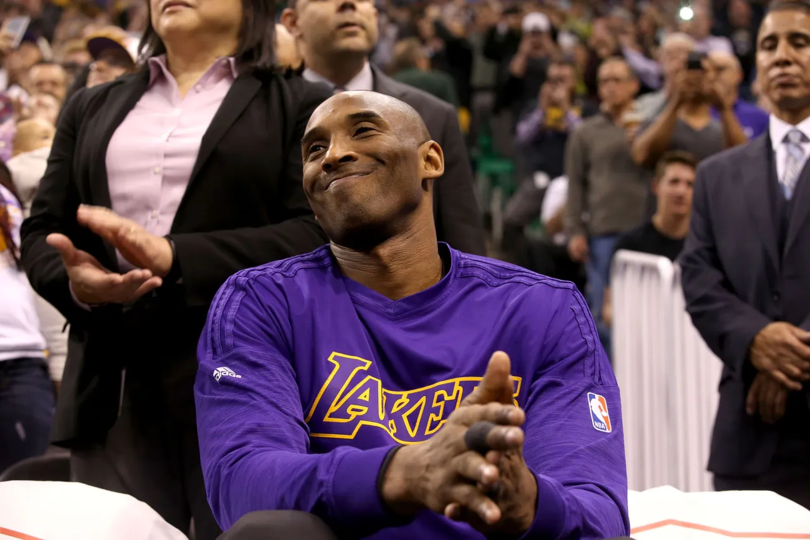

Kobe Bean Bryant
" Black Mamba "
1978-2020

“I admired him because his passion, you rarely see someone who's looking and trying to improve each and every day. Not just in sports but as a parent, as a husband.”
“I am inspired by what he's done and what he shared with Vanessa and what he's shared with his kids.”
- Michael Jordan Tribute to Kobe Bryant
Kobe Bryant's Timeline
- August 23, 1978 : Born in Philadelphia, Pennysylvania, U.S.
- June 1996 : Selected 13th overall in the NBA draft by the Charlotte Hornets out of Lower Merion High in Pennsylvania.
- 1997 : In his rookie season, Bryant won the Slam Dunk Contest at NBA All-Star Weekend, becoming the youngest player in NBA history to ever do so.
- 1998 : Made first of his 18 All-Star appearances, which included 17 straight from 2000-16.
- 2000 : Won his first of five NBA championship (2000-02, 2009-10).
- 2002 : Named to first of 11 All-NBA first team, which is tied for the most in NBA history with Karl Malone and LeBron James.
- July 2003 : Arrested in Eagle, Colorado, as part of an investigation of a sexual complaint filled by a 19-year-old hotel employee.
- January 22, 2006 : Scored 81 points in a game against the Toronto Raptors, which is the second-most points scored in a game in NBA history.
- 2008 : Won his lone NBA MVP award.
- 2009 : Won his first NBA Finals MVP award before winning it again in 2010.
- April 13, 2016 : In his final NBA game, Bryant put forth a vintage performance, scoring 60 points against the Jazz in a 101-96 Lakers win, becoming the oldest player in NBA history to score 60 in a game.
- January 26, 2020 : Died in a helicopter crash along with eight others, including his daughter Gianna, in California at the age of 41.
Career statistics
25.0 ppg
Points
4.7 apg
Assists
5.2 rpg
Rebounds